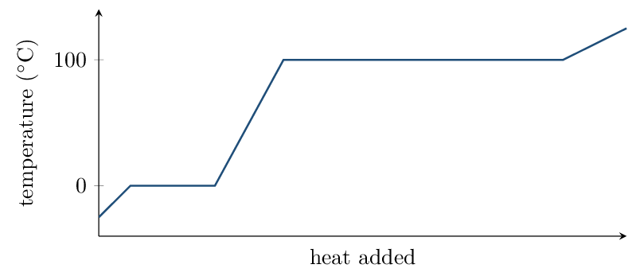

A chapter that feeds three different CED units: §10.1 \(\to\) Unit 3.1 (intermolecular forces); §10.2–10.3, 10.6–10.7 \(\to\) Unit 3.2–3.3 (solids, liquids, phases); §10.4 \(\to\) Unit 2.4 (metals and alloys); §10.7 \(\to\) Unit 2.3 (ionic solids); and §10.8 \(\to\) Unit 6.5, the energy-of-phase-changes topic that Unit 6 borrows from this chapter.
Two things inside are off-syllabus and are marked as enrichment where they arise: unit-cell counting and density calculations (§10.3–10.4) and the Clausius–Clapeyron equation (§10.8). You are responsible for the qualitative structures and for reading a heating curve — not for computing a density from a unit-cell edge.§10.9 (phase diagrams) is optional; a short treatment is included at the end of Block 5 because it makes vapour pressure easier to picture.
Intermolecular Forces Zumdahl §10.1
- Identify every intermolecular force acting in a substance.
- Rank substances by IMF strength, accounting for polarizability.
Read: Zumdahl §10.1 • PDF pp. 493–498
- Is \(\ce{CH4}\) polar? no
- Which is more electronegative, O or S? O
- Geometry of \(\ce{H2O}\): bent
INSTRUCTION A • The forces between molecules 25 min
Three intermolecular forces ZUM §10.1
SP 1These are attractions between molecules, not the bonds within them. They are far weaker than covalent bonds — which is why melting a molecular solid needs so much less energy than decomposing it.
| Force | Present in | Origin |
|---|---|---|
| London dispersion | every substance | instantaneous, momentary dipoles from electron motion |
| Dipole–dipole | polar molecules | permanent \(\delta^+\) attracted to a neighbour's \(\delta^-\) |
| Hydrogen bonding | H bonded directly to N, O, or F | an especially strong dipole–dipole case |
Dispersion forces exist in everything, including polar molecules. The question is never whether they are present but how large they are. Strength grows with the number of electrons, because a bigger, looser electron cloud is more polarizable.
Hydrogen bonding requires a direct attachment
\(\ce{CH3OH}\) hydrogen bonds through its O–H group. \(\ce{CH3OCH3}\) has the same formula \(\ce{C2H6O}\) but cannot hydrogen bond — its hydrogens are all on carbon. Boiling points: 65 °C versus -24 °C.Zumdahl's Table 10.3:
| Molecule | Forces | bp ( | deg;C) |
|---|---|---|---|
| \(\ce{BI3}\) | dispersion only | 209.5 | |
| \(\ce{PCl3}\) | dispersion \(+\) dipole–dipole | 76.1 | |
| \(\ce{NH3}\) | dispersion \(+\) hydrogen bonding | \(-33.0\) |
GUIDED PRACTICE • Identify and rank 15 min
- \(\ce{CO2}\): dispersion only
- \(\ce{HCl}\): dispersion \(+\) dipole–dipole
- \(\ce{NH3}\): dispersion, dipole–dipole, H-bonding
- Rank bp: \(\ce{CH4}\), \(\ce{Xe}\), \(\ce{H2O}\) \(\ce{H2O}\) \(>\) \(\ce{Xe}\) \(>\) \(\ce{CH4}\)
INSTRUCTION B • What IMFs control 20 min
Properties that track IMF strength ZUM §10.1
SP 6Stronger IMFs give higher boiling point, higher viscosity, higher surface tension — and lower vapour pressure.
Vapour pressure runs opposite to the others, and it catches people out. Strong IMFs hold molecules in the liquid, so fewer escape — hence a low vapour pressure. A liquid that evaporates readily is called volatile, and volatility means weak IMFs.
APPLICATION • Structure to property 20 min
- \(\ce{F2}\), \(\ce{Cl2}\), \(\ce{Br2}\), \(\ce{I2}\) are all nonpolar, yet boiling point rises steadily down the group. Explain.
- \(\ce{H2O}\) boils at 100 °C while \(\ce{H2S}\) boils at -60 °C, even though \(\ce{H2S}\) has the greater molar mass. Explain.
Two liquids have equal molar mass; one is polar and one is not. Which has the higher vapour pressure at room temperature, and why?
The Liquid State Zumdahl §10.2
- Explain surface tension, viscosity, and capillary action in terms of intermolecular forces.
- Distinguish cohesive from adhesive forces.
Read: Zumdahl §10.2 • PDF pp. 498–501
- Strongest IMF in \(\ce{CH3OH}\): hydrogen bonding
- Higher vapour pressure: strong or weak IMFs? weak
- Which has stronger dispersion, \(\ce{Ne}\) or \(\ce{Xe}\)? \(\ce{Xe}\)
INSTRUCTION A • Cohesion and adhesion 25 min
Two kinds of attraction ZUM §10.2
SP 1- Cohesive forces act between molecules of the same substance.
- Adhesive forces act between the liquid and a different surface, such as glass.
Which of the two wins determines much of a liquid's visible behaviour.
Surface tension
A molecule in the interior is pulled equally in all directions. A molecule at the surface has no neighbours above, so it is pulled inward — the liquid minimizes its surface area.
That is why water beads on a waxed car and why some insects walk on ponds. Stronger IMFs give higher surface tension.
GUIDED PRACTICE • Explain the observations 15 min
- Why does a drop of water form a sphere in free fall?
- Mercury has a much higher surface tension than water. What does that say about its cohesive forces? they are stronger than water's
INSTRUCTION B • Capillary action and viscosity 20 min
Reading a meniscus ZUM §10.2
SP 4Water creeps up a narrow glass tube because water's adhesive forces to glass — the polar Si–OH groups attract water's dipole — exceed its cohesive forces. The column rises until its weight balances that attraction.
| Liquid | Which force wins | Meniscus shape |
|---|---|---|
| Water in glass | adhesive | concave (curves up at the edges) |
| Mercury in glass | cohesive | convex (bulges upward) |
The meniscus is a direct readout of which force is stronger. Water wets glass and climbs it; mercury does not wet glass and pulls away from it. Reading a burette to the bottom of the meniscus is a consequence of this — with mercury you would read the top.
Viscosity
Viscosity is resistance to flow. It increases with stronger IMFs and also with molecular size/shape — long chain molecules tangle, which is why motor oil and glycerol pour slowly while water does not.APPLICATION • Property reasoning 20 min
- Glycerol (\(\ce{C3H8O3}\), three O–H groups) is far more viscous than ethanol (\(\ce{C2H5OH}\), one O–H). Give both reasons.
- Predict the meniscus shape for water in a plastic (nonpolar) tube and justify.
Explain why a paperclip can be floated on water even though steel is far denser than water.
Metallic and Network Solids Zumdahl §10.3–10.5
- Classify solids by particle type and predict properties.
- Explain metallic bonding, alloys, and network covalent structures.
Read: Zumdahl §10.3–10.5 • PDF pp. 501–518
- Water in glass gives which meniscus? concave
- Viscosity increases with what? stronger IMFs
- Does graphite conduct electricity? yes
INSTRUCTION A • Four kinds of solid 25 min
Classification ZUM §10.3
SP 1| Type | Particles | Held by | Properties |
|---|---|---|---|
| Metallic | cations \(+\) e\(^-\) sea | delocalized electrons | conducts always, malleable, lustrous |
| Ionic | cations, anions | electrostatic attraction | high mp, brittle, conducts only when molten/aqueous |
| Network covalent | atoms | covalent bonds | very high mp, very hard |
| Molecular | molecules | IMFs | low mp, soft, nonconducting |
GUIDED PRACTICE • Classify from data 15 min
- mp 1538 °C, conducts as a solid, malleable: metallic
- mp 3550 °C, extremely hard, insulating: network covalent
- mp -95 °C, soft, insulating: molecular
- mp 2852 °C, brittle, conducts when molten: ionic
INSTRUCTION B • Metals, alloys, and network solids 20 min
The electron sea and its consequences ZUM §10.4
SP 6Metal cations sit in fixed positions while valence electrons are delocalized across the entire sample. One model, three properties:
- conducts electricity — mobile electrons carry charge;
- malleable — layers slide without aligning like charges (contrast ionic solids, which shatter);
- lustrous — mobile electrons re-emit light.
Alloys
- Substitutional: similar-sized atoms replace host atoms — brass (Zn in Cu).
- Interstitial: small atoms fill holes between hosts — steel (C in Fe). These pin the layers, making the alloy harder and less malleable.
Two forms of carbon
| Diamond | Graphite | |
|---|---|---|
| Bonding | sp\(^3\), 3-D network | sp\(^2\) sheets, with a leftover \(p\) electron delocalized across each layer |
| Conducts? | no | yes, within the layers |
| Hardness | hardest known | soft; layers slide over one another |
Same element, wildly different properties — because structure, not composition, sets behaviour. Graphite's individual sheets are graphene, first isolated with adhesive tape in 2004 and awarded the 2010 Nobel Prize in physics. It is roughly 100 times stronger than steel.
§10.3–10.4 also develop unit cells: counting atoms per cell (\(8 \times \tfrac18 + 6 \times \tfrac12 = 4\) for face-centred cubic) and computing a solid's density from its atomic radius. This is not on the current CED. You are responsible for the qualitative structures and their properties, not for unit-cell arithmetic.
APPLICATION • Structure explains property 20 min
- Diamond and graphite are both pure carbon, yet one is the hardest known material and the other is used as a lubricant. Explain fully.
- Explain why steel is harder than pure iron but still conducts electricity.
Molecular and Ionic Solids Zumdahl §10.6–10.7
- Explain the properties of molecular solids from their IMFs.
- Explain ionic solid properties, including brittleness and conductivity.
Read: Zumdahl §10.6–10.7 • PDF pp. 518–523
- Type of solid: graphite? network covalent
- Steel is which kind of alloy? interstitial
- Do ionic solids conduct as solids? no
INSTRUCTION A • Molecular solids 25 min
Weak forces, low melting points ZUM §10.6
SP 1In a molecular solid the lattice points are occupied by whole molecules, held to each other only by IMFs.
Melting a molecular solid breaks intermolecular forces, never covalent bonds. Melting ice does not break O–H bonds — it breaks hydrogen bonds between water molecules. Writing otherwise scores zero on an FRQ, and the numbers show why: hydrogen bonds in water are roughly 20 kJ/mol while the O–H bond is about 460 kJ/mol.
Why ice floats
Hydrogen bonding forces water molecules into an open hexagonal lattice with more empty space than the liquid. Solid water is therefore less dense than liquid water — almost uniquely among substances, and the reason lakes freeze from the top down.
GUIDED PRACTICE • Predict melting points 15 min
Rank by increasing melting point and give the reason: \(\ce{CH4}\), \(\ce{H2O}\), \(\ce{NaCl}\), \(\ce{SiO2}\).
INSTRUCTION B • Ionic solids 20 min
Lattice, brittleness, conductivity ZUM §10.7
SP 6An ionic solid is a repeating three-dimensional lattice — each cation surrounded by anions and vice versa. There is no “\(\ce{NaCl}\) molecule,” only a repeating ratio.
Strike an ionic crystal and one layer shifts relative to the next. That shift brings like charges into alignment — cation above cation — and the sudden repulsion splits the crystal along a clean plane.
Now do the same to a metal. Its layers slide too, but the delocalized electron sea simply flows with them and no like-charge alignment occurs — so the metal deforms instead of breaking. Brittle versus malleable comes down entirely to what happens when layers shift.
Conductivity requires mobile charges
Solid ionic compounds do not conduct: the ions are locked in place. Melt or dissolve them and the ions become mobile, so the liquid or solution conducts.
APPLICATION • Contrasting solids 20 min
- Copper conducts as a solid; \(\ce{NaCl}\) conducts only when molten or dissolved. Explain both, naming the charge carrier in each.
- Why is \(\ce{MgO}\) both harder and higher-melting than \(\ce{NaCl}\)?
Identify the solid type and justify: a substance melts at 801 °C, shatters when struck, and conducts only when dissolved.
Vapour Pressure and Changes of State Zumdahl §10.8
- Explain vapour pressure and its temperature dependence.
- Read a heating curve and compute the energy of phase changes.
Read: Zumdahl §10.8 • PDF pp. 523–530
- Why does ice float? open H-bonded lattice
- Melting a molecular solid breaks: IMFs, not bonds
- Charge carrier in molten \(\ce{NaCl}\): ions
- Specific heat of liquid water: 4.184 J/g/°C
INSTRUCTION A • Vapour pressure 25 min
An equilibrium, not an escape ZUM §10.8
SP 4In a closed container, molecules leave the liquid and others return. When the two rates are equal the system is at equilibrium, and the pressure of vapour above the liquid is its vapour pressure.
Vapour pressure increases with temperature (more molecules have enough kinetic energy to escape) and decreases with stronger IMFs.
Boiling
A liquid boils when its vapour pressure equals the external pressure. The normal boiling point is the temperature at which vapour pressure reaches 1 atm.
This is why water boils near 95 °C in Denver and why a pressure cooker works. Lower the external pressure and the liquid boils sooner; raise it and boiling is postponed to a higher temperature — which is what cooks the food faster.
§10.8 derives the Clausius–Clapeyron equation, \(\ln(P_{\text{vap}}) = -\frac{\Delta H_{\text{vap}}}{R}\left(\frac1T\right) + C\), so that a plot of \(\ln P\) versus \(1/T\) is a straight line of slope \(-\Delta H_{\text{vap}}/R\). It is elegant and it is not on the current CED. The qualitative content — vapour pressure rises with temperature, and a steeper slope means a larger \(\Delta H_{\text{vap}}\) — is what matters.
GUIDED PRACTICE • Vapour pressure reasoning 15 min
- Higher vapour pressure at 25 °C: water or diethyl ether (bp 35 °C)? ether
- Which therefore has the larger \(\Delta H_{\text{vap}}\)? water
- Does vapour pressure depend on the amount of liquid present? Explain.
INSTRUCTION B • Heating curves 20 min
Where the energy goes ZUM §10.8
SP 5
On a sloped segment, added energy raises temperature — use \(q = mc\Delta T\). On a plateau, temperature is constant while energy goes into overcoming IMFs — use \(q = n\Delta H\).
Heat 18.0 g (one mole) of ice from -25.0 °C to steam at 125.0 °C. Data: \(c_{\text{ice}} = 2.09\), \(c_{\text{water}} = 4.184\), \(c_{\text{steam}} = 2.0\) J/g/°C; \(\Delta H_{\text{fus}} = 6.02\), \(\Delta H_{\text{vap}} = 40.7\) kJ/mol. \begin{align*} \text{warm ice} &: (18.0)(2.09)(25.0) = 0.94\,\mathrm{kJ}\\ \text{melt} &: (1.00)(6.02) = 6.02\,\mathrm{kJ}\\ \text{warm water} &: (18.0)(4.184)(100.0) = 7.53\,\mathrm{kJ}\\ \text{vaporize} &: (1.00)(40.7) = 40.7\,\mathrm{kJ}\\ \text{warm steam} &: (18.0)(2.0)(25.0) = 0.90\,\mathrm{kJ}\\[2pt] \text{total} &= 56.1\,\mathrm{kJ} \end{align*} Note that vaporization alone is 40.7 kJ — about 73% of the total. Separating molecules completely costs far more than merely loosening them.
APPLICATION • Heating curve calculations 20 min
- How much energy is needed to melt 45.0 g of ice already at
0 °C?
\(n = 45.0/18.02 = 2.50\,\mathrm{mol}\); \(q = 2.50 \times 6.02 = 15.1\,\mathrm{kJ}\)
- How much energy to convert 45.0 g of water at 100 °C into steam at 100 °C? 102 kJ
- Explain why steam at 100 °C causes far worse burns than liquid water at 100 °C.
A phase diagram plots pressure against temperature, dividing the plane into solid, liquid, and gas regions. The lines are equilibria between two phases; the triple point is where all three coexist. It is not on the CED, but it makes the vapour-pressure and boiling-point ideas above easier to picture in one image — worth twenty minutes if you have them.
On a heating curve, why does temperature stay constant during a phase change even though energy is still being added?